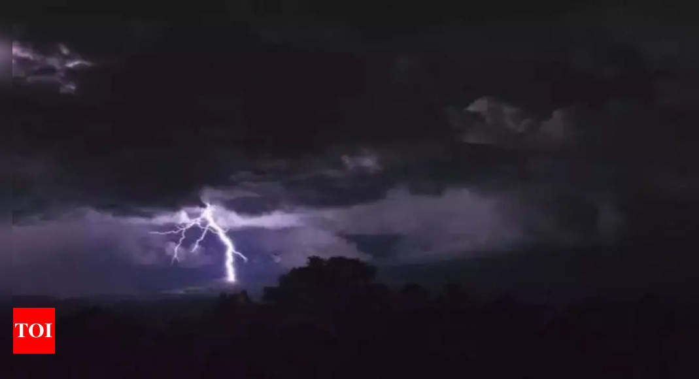

Pakistan Rains: Lightning Strikes Kill 10
Image Credits https://m.timesofindia.com/world/pakistan/lightning-strikes-kill-10-as-pre-monsoon-rains-lash-pakistans-eastern-punjab-province/articleshow/101272366.cms
Lightning strikes are one of the most deadly and unpredictable natural disasters. According to the National Oceanic and Atmospheric Administration (NOAA), lightning kills an average of 49 people per year in the United States alone. In Pakistan, a recent spate of pre-monsoon rains in the eastern Punjab province has resulted in the deaths of at least 10 people from lightning strikes.

What Causes Lightning?
Lightning is a discharge of static electricity that occurs between clouds or between a cloud and the ground. The buildup of electrical charge in a storm cloud creates a potential difference between the cloud and the ground, and lightning occurs when this potential difference becomes large enough to overcome the insulating properties of the air. This process is often accompanied by thunder, which is caused by the rapid heating and expansion of the air surrounding the lightning bolt.
How Dangerous Is Lightning?
Lightning is incredibly dangerous due to the high voltage and current involved. According to the NOAA, lightning can carry currents of up to 30,000 amperes and voltages of up to 100 million volts. The effects of a lightning strike can range from mild burns and shock to death. In addition, lightning strikes can cause fires, explosions, and damage to electrical and electronic equipment.
Case Study: The 1994 Rwanda Genocide
In 1994, Rwanda experienced a genocide that left an estimated 800,000 people dead. Many of the deaths were caused by machetes and guns, but a significant number were also caused by lightning. During the rainy season in Rwanda, people take shelter under trees, which are often struck by lightning. According to a study by the U.S. National Institutes of Health, lightning strikes were responsible for an estimated 10% of the deaths during the genocide.
Case Study: The 2014 World Cup in Brazil
During a match between Germany and Ghana in the 2014 World Cup in Brazil, a severe thunderstorm caused a delay in play. According to FIFA, during the 2014 World Cup there were 25 lightning strikes within an 8 km radius of the stadiums. In order to protect players and spectators, FIFA implemented a lightning detection system that would alert officials to any nearby lightning strikes.
How to Stay Safe During a Lightning Storm?
If you are caught outside during a lightning storm, the best course of action is to seek shelter indoors or in a car with a metal roof. If no shelter is available, avoid open fields, high ground, and isolated trees or structures. If you are in a group, spread out to reduce the chance of multiple people being struck.
Conclusion
In conclusion, lightning strikes are a serious and deadly natural phenomenon that can strike at any time and with little warning. The recent deaths in Pakistan serve as a tragic reminder of the danger of lightning, and highlight the importance of staying informed and prepared for severe weather. To stay safe during a lightning storm, seek shelter indoors or in a car with a metal roof, and avoid open fields, high ground, and isolated trees or structures.
Curated by Team Akash.Mittal.Blog
Share on Twitter Share on LinkedIn